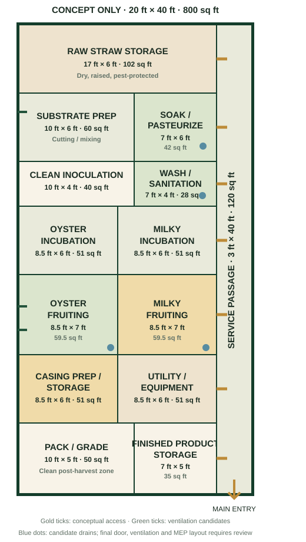

Naturally grown. Freshly harvested.
A thoughtful start to better local food.
GreenSpore Farms is developing a focused mushroom-cultivation pilot near Kanipakam, Andhra Pradesh. The first cycle is planned around Oyster and Milky mushrooms, clean growing practices, and local market learning.
Kanipakam, Andhra Pradesh Proposed markets: Tirupati and Bengaluru
A practical pilot facility
Separate spaces for each step of the crop.
The concept layout separates dry straw storage, substrate preparation, incubation, Oyster and Milky fruiting, casing and clean storage, and packing. A service passage supports movement through the proposed 20 ft × 40 ft facility.
Concept planning only. A local engineer or architect must confirm room dimensions, structure, access, drainage, ventilation, setbacks, and safety requirements before construction.
View the indicative project budget
Project roadmap
Prove the process, then grow with confidence.
The proposed sequence puts training, local checks, and pilot results ahead of larger investments.
- 01
Validate and prepare
Confirm suitable strains, get local construction and equipment quotes, check scheme requirements, and survey buyers.
- 02
Build the pilot
Prepare essential rooms, drainage, racks, ventilation, pasteurisation, and basic environmental monitoring.
- 03
Run a small trial
Start with 30–60 bags, record contamination and yields, and test actual buyer prices and delivery.
- 04
Review before scaling
Complete multiple successful cycles and demonstrate repeat demand before expanding production or automation.
Partner with purpose